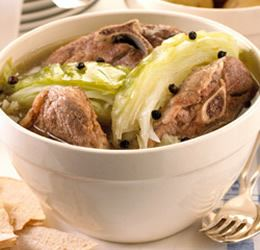

Fårikål

Description
Fårikål is a traditional lamb or mutton recipe from Southern Norway. Lamb and cabbage are layered
and stewed with peppercorns. Serve with boiled potatoes that have been sprinkled with parsley.
Ingredients
- 8 ounces sliced lamb meat
- 1 head cabbage, cored and sliced
- 2 cups water
- 1 ½ tablespoons whole black peppercorns
- salt to taste
Steps
- Arrange a layer of sliced lamb in the bottom of a Dutch oven or soup pot. Top with a layer of
cabbage. Repeat layering as many times as you can; season with salt to taste. Tie peppercorns
into a small piece of cheesecloth; place in center of casserole. Pour water in and cover with
a lid.
- Bring to a boil; simmer over low heat for 2 hours. Remove peppercorns before serving.